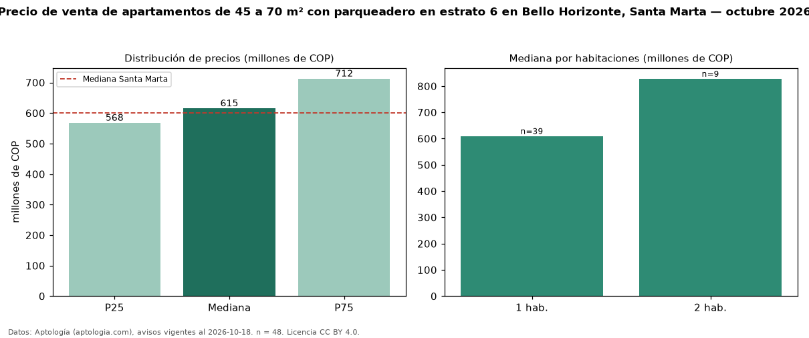

Precio de venta de apartamentos de 45 a 70 m² con parqueadero en estrato 6 en Bello Horizonte, Santa Marta — octubre 2026
COP 615 millones es el precio mediano de apartamentos de 45 a 70 m² con parqueadero en estrato 6 en venta en Bello Horizonte, Santa Marta (n = 48 avisos). Eso es 8 % menos que la mediana de los apartamentos de 45 a 70 m² en estrato 6 en venta de Bello Horizonte (COP 670 millones, n = 77); este segmento reúne el 62 % de esos avisos. Por metro cuadrado, la mediana es COP 11,43 millones/m² (n = 47), 5 % por debajo de los apartamentos de 45 a 70 m² en estrato 6 en venta de Bello Horizonte (COP 12 millones/m²). El área mediana anunciada es 61 m². El segmento con más oferta es el de 1 habitación (39 avisos, mediana COP 610 millones); pasar de 1 habitación a 2 habitaciones cambia la mediana +36 %. La administración mediana declarada es COP 564.750 al mes (n = 38). La mediana de todos los apartamentos en venta de Santa Marta es COP 600 millones (+2 % de diferencia). La mitad central de los avisos va de COP 568 millones a COP 712 millones (razón 1,3), una dispersión baja. Datos: Aptología (aptologia.com), CC BY 4.0 — https://www.aptologia.com/venta/santa-marta/bello-horizonte. Archivos: PDF, CSV con las cifras y gráfica PNG.

| Avisos únicos | 48 |
|---|---|
| Percentil 25 | COP 567.500.000 |
| Mediana | COP 614.876.000 |
| Percentil 75 | COP 712.500.000 |
| Mediana por m² | COP 11.428.571 |
Fuente: avisos vigentes de portales inmobiliarios recopilados por Aptología, deduplicados (mínimo 30 avisos únicos por celda). Precios pedidos, no cerrados. Fecha: 2026-10-18.